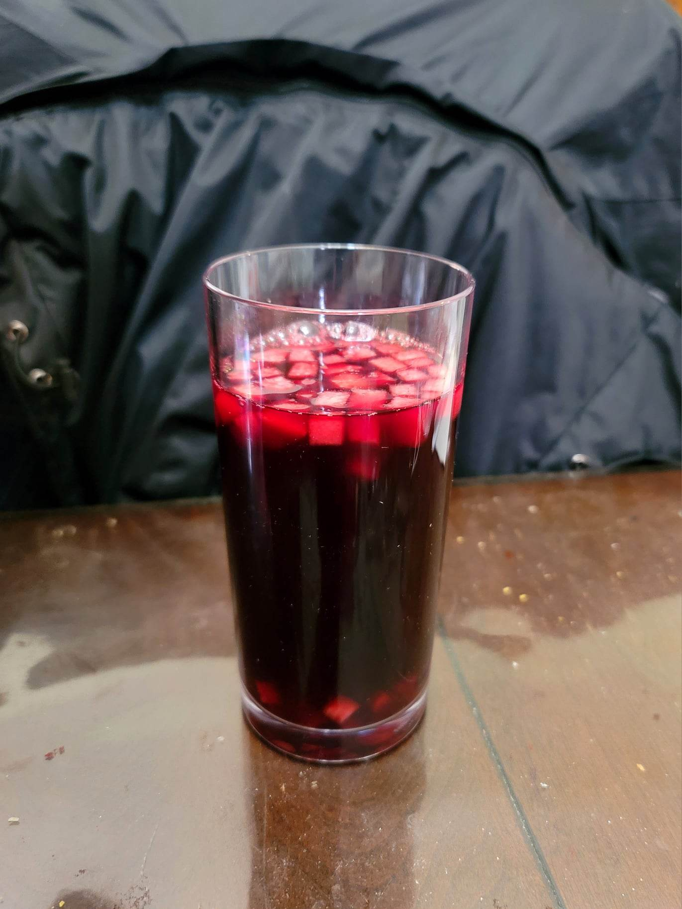

Chicha Morada

Ingredients:
- 2 lb Purple corn
- 1 Large pineapple, rind and core separated
- 5 Sour apples + more for topping
- 2 Pears or more Sour apples
- 8 Whole cloves
- 2 Cinnamon sticks
- 1 gallon Water
- 5 Limes, or to taste
- 1 cup Sugar, or to taste
Instructions:
- To a very large pot, add all the ingredients except for the pineapple flesh (only include the rind and core for now), the limes, and the sugar. Bring the pot to a boil and then reduce to medium-low. Let simmer for 90 minutes.
- Strain the liquid from the pot into a pitcher. Stir in the sugar to taste until completely dissolved. Let cool and then transfer to the fridge.
- Once chilled, stir in the lime juice. Cut pineapple and some apples into small cubes and add them in. Serve cold or room temperature.